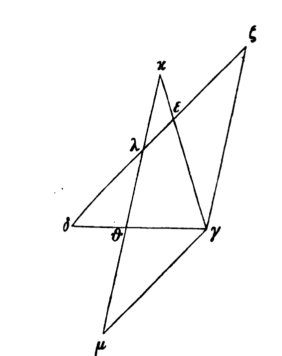

Proposition 2: Cyclic Triangle Centroid Invariance¶
Synagoge Book VIII, Proposition 2 (Hultsch III, pp. 1038–1040) · Critical English Edition
If points $D, E, F$ divide the three sides $BC, CA, AB$ of triangle $\triangle ABC$ in the same cyclic ratio $\lambda : (1 - \lambda)$, then the inscribed triangle $\triangle DEF$ shares the exact same center of gravity as $\triangle ABC$.

